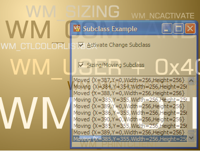

Subclassing Using NativeWindow (21K)
Subclassing Using NativeWindow (21K)
 9 Mar 2003
9 Mar 2003
First Posted
 Subclassing Without The Crashes
Subclassing Without The Crashes

Subclassing In .NET
Use the System.Windows.Forms.NativeWindow class for robust and easily extensible subclassed applications.
In VB 5 and 6, subclassing was something of a pain. To do it at all you needed a raft of cunning hacks and had to keep a very careful track on which object was subclassing what. All of that pain is removed in .NET with the System.Windows.Forms.NativeWindow class, which makes it almost trivial to provide an extensible, safe and robust subclass for any window you choose. This article demonstrates how to use it, and provides a pair of classes for detecting some of the events that the framework has missed: activation state changes and low level Sizing and Moving control.
Getting At Windows Messages
As you might have seen from the previous Hot Key Form sample, it is easy to get at most the message stream for .NET framework Windows and Controls by overriding the protected WndProc method. However, there are two issues with that approach:
- Some Windows Don't Have It
Examples of windows which you can easily create using the .NET Framework that you can't get access to the message loop directly are the MDI Client area of an MDI form and the ListBox portion of a ComboBox. - Code Reuse
An object can only inherit the implementation of one other object. If you wrote two different extensions to a form, say one to perform Hot-Key trapping, and another to perform Capture-Loss processing, then you couldn't use that code directly to have a form that inherits both behaviours without rewriting some of the code (one of the extensions would have to inherit from the other).
A solution to both of these problems is to externalise the message trapping from a particular classes implementation, and luckily this is easy to do with the NativeWindow object.
Using NativeWindow For Subclassing
The NativeWindow object has three methods of interest if you'd like to start using this technique:
- AssignHandle(IntPtr handle)
Attaches an instance of the object to the specified window handle and attaches the subclassing instance. - ReleaseHandle
Removes the subclasser and resets the internal handle to zero. Note that this is automatically called when the Window's WM_NCDESTROY message is received, which is the last thing that happens to a Window before it finally joins bit heaven. - WndProc(ref Message m)
A method which you can override to react to the messages passing through the chain. By default, no message processing is done.
Using it is then easy: just create a class which extends NativeWindow, override the WndProc message and you are away. The best thing about the object is that it allows you to attach as many instances as you'd like to the same handle, and they all keep working fine. I assume that the .NET Framework uses the same subclassing technique that is now also implemented in ComCtl32.DLL version 6.0 to achieve this (search for SetWindowSubClass for more information on this).
Example: Responding to WM_ACTIVATE messages
One thing that the Windows.Forms.Form object misses is an event to tell you the user has switched to another application. This can be very handy to know if you are (for example) allowing the user to draw on the screen with the mouse, as otherwise it is possible to get into a limbo state where your app thinks its still drawing but in fact the user's happily typing away in an email that's just arrived.
Resolving this means you need to intercept a message telling you what's happened. Candidates are WM_CAPTURECHANGED or WM_ACTIVATE, in this case I've picked WM_ACTIVATE as this can also be useful when playing about with drop-down windows and the like.
The first step is to decide how you want to notify about activation change messages. I've chosen to force the owner to implement an interface to get the message; however you can equally raise an Event in which case the component is entirely decoupled from the Window its checking on. So the implementation consists of two parts: an interface for notification and a class which extends NativeWindow to alert the user. As the WM_ACTIVATE message can tell you whether activation was caused by the mouse or by some other means, I also include a short enum for the activation reason, which means the code comes in three parts:
1. Activation Reason Enum
/// <summary>
/// Activation state change type.
/// </summary>
public enum ActivationStateChangeType : int
{
/// <summary>
/// The form is inactive
/// </summary>
WA_INACTIVE = 0,
/// <summary>
/// The form is active
/// </summary>
WA_ACTIVE = 1,
/// <summary>
/// The form has been clicked to make it active
/// </summary>
WA_CLICKACTIVE = 2
}
2. Notification Interface
/// <summary>
/// Interface for receiving Activation State Change
/// notifications
/// </summary>
public interface IActivateChangeNotify
{
/// <summary>
/// Notifies of an Activation state change in the window
/// </summary>
/// <param name="changeType">Type of activation change
/// </param>
void ActivateChanged(
ActivationStateChangeType changeType);
}
3. Subclass Implementation
/// <summary>
/// Class for notifying of Activation state changes
/// for a Window.
/// </summary>
public class ActivateChangeSubclass :
System.Windows.Forms.NativeWindow
{
/// <summary>
/// Stores the notify interface object, if any
/// </summary>
private IActivateChangeNotify notify = null;
/// <summary>
/// Message send to a window when activation state
/// changes
/// </summary>
private const int WM_ACTIVATE = 0x6;
/// <summary>
/// Processes window messages and notifies of any activation
/// state changes.
/// </summary>
/// <param name="m">Message</param>
protected override void WndProc(
ref System.Windows.Forms.Message m)
{
// always perform default:
base.WndProc(ref m);
// If message is activate and a notifier
// is in place then notify it:
if (m.Msg == WM_ACTIVATE)
{
if (notify != null)
{
notify.ActivateChanged(
(ActivationStateChangeType)((int)m.WParam));
}
}
}
/// <summary>
/// Creates a new instance of the ActivateChangeSubclass
/// object and starts checking for Activate state changes
/// </summary>
/// <param name="handle">Handle of window to check for
/// Activation State changes</param>
/// <param name="notify">Object to receive Activtion state
/// change notifications</param>
public ActivateChangeSubclass(
IntPtr handle,
IActivateChangeNotify notify
)
{
this.AssignHandle(handle);
this.notify = notify;
}
}
This code is included in the download, along with another class which allows you to intercept WM_SIZING and WM_MOVING events. These give you fine-grained control over exactly where a window can be sized or moved to.
Comparision of Using NativeWindow to SSubTmr
If you've never tried the Subclassing and Timer Assistant from this site with VB5 or VB6 then you can skip this section since it won't be relevant.
If you were using the Subclassing and timer assistant to subclass a window, you would write code something like this:
'
Implements ISubClass
Private Sub Form_Load()
' Start subclassing, and request the
' WM_SIZING message:
AttachMessage Me, Me.hWnd, WM_SIZING
End Sub
Private Sub Form_QueryUnload(Cancel As Integer, UnloadMode As Integer)
' Stop subclassing (called automatically when
' the form unloads via the WM_DESTROY message)
DetachMessage Me, Me.hWnd, WM_SIZING
End Sub
Private Property Get ISubClass_MsgResponse() As EMsgResponse
' Tell the subclasser not to pass the message
' on to the default windows procedure:
If (CurrentMessage = WM_SIZING) Then
ISubClass_MsgResponse = emrConsume
End If
End Property
Private Property Let ISubClass_MsgResponse( _
emr As EMsgResponse)
' This is a legacy method and never used
End Property
Private Function ISubClass_WindowProc(
ByVal hWnd As Long, _
ByVal msg As Long, _
ByVal wParam As Long, _
ByVal lParam As Long _
) As Long
Select Case msg
Case WM_SIZING
' Process message here (lParam is a pointer to a rectangle).
' If we wanted to call the default behaviour we could
' either set ISubClass_MsgResponse to emrPreProcess or
' we can call the default window procedure using
' CallOldWindowProc(hWnd, msg, wParam, lParam)
' Return true:
ISubClass_WindowProc = 1
End Select
End Function
The NativeWindow method is fairly similar: really the only differences are that firstly you now extend NativeWindow rather than implementing an interface for the subclass and secondly that your subclass procedure always receives all messages, rather than a filtered set:
// Rather than implementing ISubclass we extend NativeWindow:
Public Class SizingSubClass : NativeWindow
{
protected override void WndProc(
ref System.Windows.Forms.Message m)
{
// We have to filter our own messages:
switch (m.Msg)
{
case WM_SIZING:
// Process message here (lParam is a
// pointer to a rectangle).
// If we wanted to call the default behaviour
// we could call base.WndProc(ref m) here.
// Return true:
m.Result = 1;
break;
case default:
// perform default processing:
base.WndProc(ref m);
break;
}
}
}
public class Form1 : System.Windows.Form
{
private SizingSubClass ss = null;
public Form1()
{
this.Load += new EventHandler(Form1_Load);
this.Closing += new CancelEventHandler(Form1_Closing);
}
private void Form1_Load(object sender, EventArgs e)
{
ss = new SizingSubClass();
// Tell the NativeWindow to start subclassing:
ss.AssignHandle(this.Handle);
}
private void Form1_Closing(object sender, CancelEventArgs e)
{
// Tell the NativeWindow to stop subclassing
// (called automatically when Form1 unloads and
// the WM_NCDESTROY message is sent):
ss.ReleaseHandle();
}
}
Also..
If you look at the NativeWindow class you'll see it also allows you to create your own Win32 windows from first principles using the CreateHandle method. This provides an excellent start for creating things like pop-up windows, particularly now in XP you can give any window a drop shadow by giving its class the CS_DROPSHADOW style. More to follow...